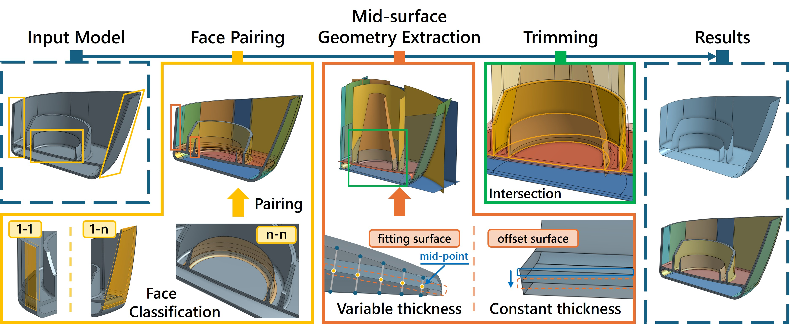
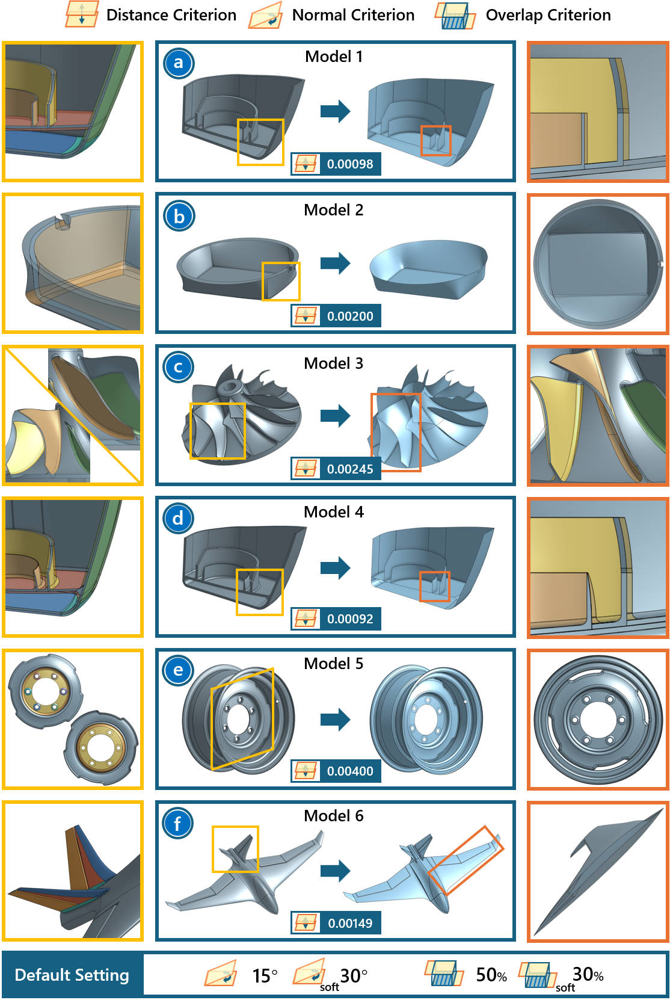

1 - College of Computer Science and Technology, Zhejiang University, Hangzhou, 310007, China
2 - Zhejiang Sci-Tech University, Hangzhou, 310018, China
3 - Shenzhen Poisson Software Co., Ltd., Shenzhen, 518129, China
* - Corresponding Author
Abstract
This paper addresses the challenge of efficiently abstracting mid-surfaces from complex variable thin-walled models,
a critical task in computer-aided design (CAD) and finite element analysis (FEA) for simplifying thin-walled structures.
Traditional methods often require manual specification of pairing faces, which can be time-consuming and error-prone.
Alternatively, automatic face pairing methods fail to meet the actual needs of variable thin-walled models, resulting in the accumulation of topological errors.
Additionally, existing algorithms struggle to extract mid-surfaces from models with varying wall thickness or produce mid-surfaces with poor accuracy, leading to geometric errors.
Furthermore, the computational efficiency of these methods is often inadequate for large-scale models. To overcome these challenges,
we propose an automated face-pairing mechanism that eliminates the need for manual intervention,
enhancing the algorithm’s robustness and enabling it to handle cases that the commercial CAD modeling engine, Parasolid, cannot process.
Our approach accurately processes variable thin-walled models, with results closely aligning with the ground truth, as demonstrated by the provided error distribution tables. Moreover,
our algorithm achieves a 4 − 12 times improvement in efficiency than previous methods over the geometry extraction stage and supports multi-threaded acceleration,
significantly reducing computation time. Experimental results demonstrate that our algorithm surpasses existing methods in both accuracy and efficiency,
offering a promising solution for mid-surface extraction in complex, variable thin-walled models.

Overview: The input thin-walled model’s faces are first classified into different types and further organized into distinct face group pairs (FGPs). Subsequently, the mid-surface geometry extraction algorithm extracts the mid-surface for each face group based on the wall thickness. Finally, the model undergoes trimming operations, including intersection and imprinting, to determine the boundaries of the mid-surface, thereby yielding the final mid-surface.

Benchmark:
Paper (PDF 5.11 MB) Supplementary Material (PDF 0.93 MB) Supplementary Video (48.1 MB)
Li Ye, Xinhang Zhou, Peng Fan, Ruofeng Tong, Hailong Li, Peng Du and Min Tang. 2025. MidSurfer: Efficient Mid-surface Abstraction from Variable Thin-walled Models. Computer-Aided Design (2025) 1–14, Accepted.
@article{ye25midsurfer,
author = {Ye, Li and Zhou, Xinhang and Fan, Peng and Tong, Ruofeng and Li, Hailong and Du, Peng and Tang, Min},
title = {MidSurfer: Efficient Mid-surface Abstraction from Variable Thin-walled Models},
journal = {Computer-Aided Design},
year = {2025},
publisher = {Elsevier}
}
gDist: Efficient Distance Computation between 3D Meshes on GPU
CTSN: Predicting Cloth Deformation for Skeleton-based Characters with a Two-stream Skinning Network
D-Cloth: Skinning-based Cloth Dynamic Prediction with a Three-stage Network
N-Cloth: Predicting 3D Cloth Deformation with Mesh-Based Networks
I-Cloth: Incremental Collision Handling for GPU-Based Interactive Cloth Simulation
PSCC: Parallel Self-Collision Culling with Spatial Hashing on GPUs
I-Cloth: API for fast and reliable cloth simulation with CUDA
Efficient BVH-based Collision Detection Scheme with Ordering and Restructuring
MCCD: Multi-Core Collision Detection between Deformable Models using Front-Based Decomposition
TightCCD: Efficient and Robust Continuous Collision Detection using Tight Error Bounds
Fast and Exact Continuous Collision Detection with Bernstein Sign Classification
A GPU-based Streaming Algorithm for High-Resolution Cloth Simulation
UNC dynamic model benchmark repository
Collision-Streams: Fast GPU-based Collision Detection for Deformable Models
Fast Continuous Collision Detection using Deforming Non-Penetration Filters
Fast Collision Detection for Deformable Models using Representative-Triangles
DeformCD: Collision Detection between Deforming Objects
Self-CCD: Continuous Collision Detection for Deforming Objects
Interactive Collision Detection between Deformable Models using Chromatic Decomposition
Fast Proximity Computation Among Deformable Models using Discrete Voronoi Diagrams
CULLIDE: Interactive Collision Detection between Complex Models using Graphics Hardware
RCULLIDE: Fast and Reliable Collision Culling using Graphics Processors
Quick-CULLIDE: Efficient Inter- and Intra-Object Collision Culling using Graphics Hardware
This work was funded in part by "Pioneer" and "Leading Goose" R&D Program of Zhejiang Province (No. 2025C01086).